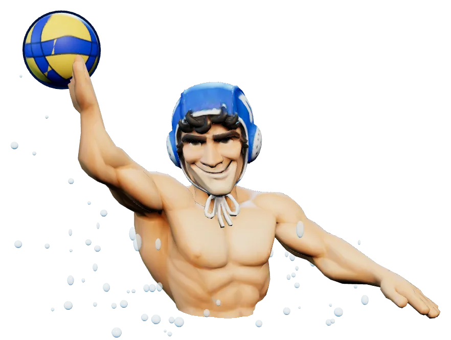
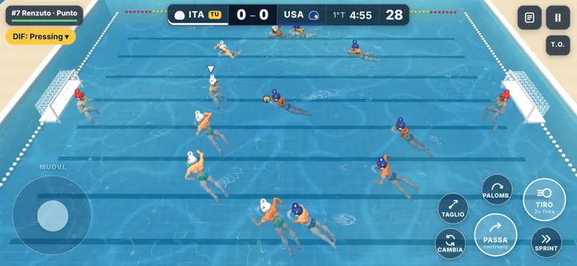

SCEGLI LA NAZIONALE.
UNA NAZIONALE. TUTTO IL TORNEO.
OGNI PERCORSO RESTA.
PREPARAZIONE PARTITA
Porta avversaria in alto: destra e sinistra sono quelle di chi attacca. Pos. = posizione, # = calotta. La numerazione cambia fra parità e 6 contro 5.
PARITÀ · 6 CONTRO 6
Lato − a sinistra, + a destra. Nell’area centrale dei 2 m il posto resta ad almeno 2,1 m dalla porta.
ATTACCO
DIFESA
In Zona e Zona a M aiuta un solo compagno fra quelli autorizzati, se è abbastanza vicino e il boa può ricevere. Lascia spazio al proprio uomo e torna su di lui quando la linea al centro si chiude. Chi controlli tu mantiene i tuoi comandi.
Salva per usare questo piano dalla prossima partita, anche nei tornei. Si conserva in questo browser; l’avversaria sceglie la propria strategia.
PREPARAZIONE PARTITA · 6 CONTRO 5
Scegli fino a 3 schemi. In partita, quando gli avversari hanno un espulso, compaiono in alto: li chiami con un tocco (o con i tasti 1, 2, 3; il 4 torna al 4-2 base) e i compagni si muovono fase dopo fase.
Numerazione del 4–2, guardando la porta: Pos. 1 destra 2 m; Pos. 2 esterno destro 5 m; Pos. 3 esterno sinistro 5 m; Pos. 4 sinistra 2 m; Pos. 5 palo destro; Pos. 6 palo sinistro. I numeri seguono i giocatori nelle rotazioni e non sono le calotte. In parità la numerazione è diversa.
Schemi della libreria tratti da C. Mistrangelo, «Pali in superiorità numerica» (Area Tecnica, Rari Nantes Savona). I tuoi schemi e la scelta restano in questo browser.
Trascina le posizioni del 6 contro 5, non le calotte: numeri del 4–2 iniziale, conservati nelle rotazioni. Porta in alto, destra di chi attacca a destra. In giallo i pali; tratteggio = fase prima, frecce = movimento.
I compagni cercano di dare la palla a questo giocatore durante la fase.

I comandi a schermo cambiano con il possesso della palla.
Frecce per nuotare. Spazio per tirare e preparare le finte. D per passare.
Trascina il joystick per nuotare.
Usa le frecce per nuotare e scegliere la direzione.
Tocca TIRO e rilascia subito per un tiro rapido di polso. Tieni premuto per preparare il tiro e fintare, poi rilascia per tirare. L'anello diventa più chiaro: dopo 0,9 secondi il tiro è pronto alla massima potenza, che resta disponibile finché tieni premuto. Tocca TIRO mentre arriva un passaggio per il tiro al volo.
Premi e rilascia subito Spazio (o K) per un tiro rapido di polso. Tieni premuto per preparare il tiro e fintare, poi rilascia per tirare. L'anello diventa più chiaro: dopo 0,9 secondi il tiro è pronto alla massima potenza, che resta disponibile finché tieni premuto. Premi K mentre arriva un passaggio per il tiro al volo.
Passaggio al compagno nella direzione in cui spingi.
Indica un compagno con le frecce e rilascia D per passare. Senza direzione, il gioco sceglie un appoggio.
Quando la palla è degli avversari il tasto PASSA diventa CONTRASTA: 1–2 tocchi disturbano il portatore; il terzo di fila è fallo.
Premi D vicino al portatore per contrastare. Uno o due tocchi disturbano; il terzo di fila è fallo.
Tocchi ripetuti: più tocchi, scatto più lungo (consuma energia); al centro sostieni il tagliafuori.
Premi Shift a tocchi per prolungare lo scatto: consuma energia. Al centro sostieni il tagliafuori.
Seleziona il compagno più vicino alla palla.
Seleziona il compagno più vicino alla palla.
Tiro a parabola sopra il portiere.
Premi L per tirare a parabola sopra il portiere.
In attacco un compagno taglia; con palla al boa prova la girata. In difesa raddoppio.
Premi F in attacco per chiamare un taglio; con palla al boa provi la girata. In difesa chiami il raddoppio.
Tocca lo schema in alto a sinistra per cambiarlo.
In parità: Q Arco · W Entrata · E Incrocio · 4 Palla al boa. Funzionano anche i tasti 1–4. In 6c5, Q/W/E o 1–3 chiamano i tuoi tre schemi; 4 torna al 4-2 base.
In alto a destra; time-out solo quando la tua squadra ha la palla.
P o Esc mette in pausa; T chiama time-out, solo quando la tua squadra ha la palla.
Con il controller: levetta sinistra muove · A passa · X tiro · Y palombella · B taglio · LB cambia · RB sprint · Start pausa.
LA PARTITA È IN PAUSA
Il fischio finale. La tua nazionale sul podio.